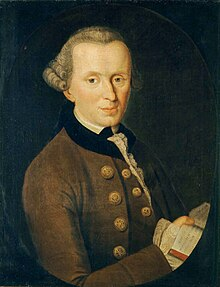

Immanuel Kant

La ética deontológica de Kant se basa en la idea de que la moralidad de una acción no depende de sus consecuencias, sino de si la acción se ajusta a ciertas normas o deberes.
-Imperativo Categórico: Este es el pilar de su ética. Según Kant, debemos actuar según máximas que puedan convertirse en leyes universales. Es decir, solo debemos hacer aquello que consideremos que todos deberían hacer en situaciones similares.
-Autonomía y Dignidad: Para Kant, los seres humanos tienen un valor intrínseco y deben ser tratados como fines en sí mismos, nunca como medios para un fin. Esto implica respetar la autonomía y la dignidad de cada persona.
-Moralidad y Razón: Kant creía que la moralidad está intrínsecamente vinculada a la razón. Según él, los principios morales son derivados de la razón pura y son universales y necesarios.